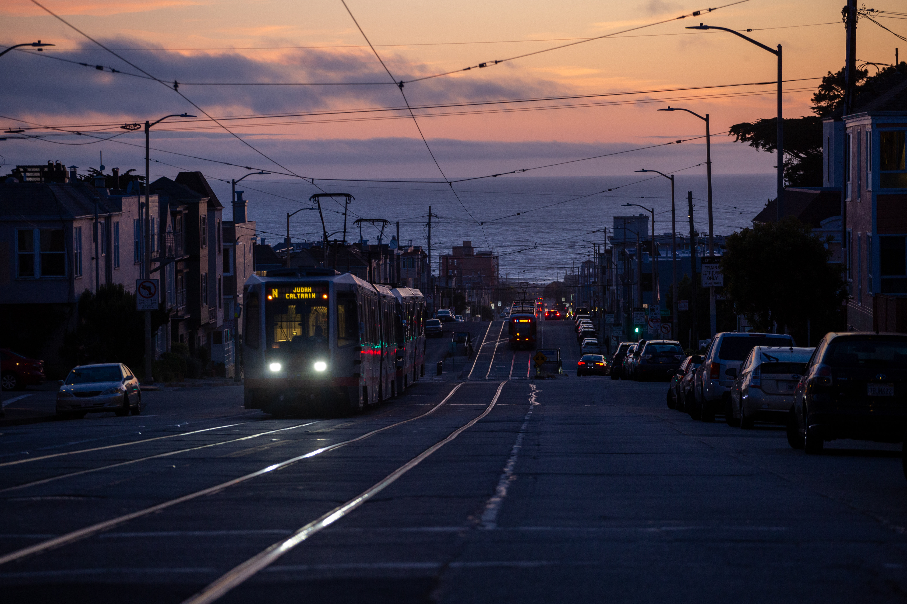
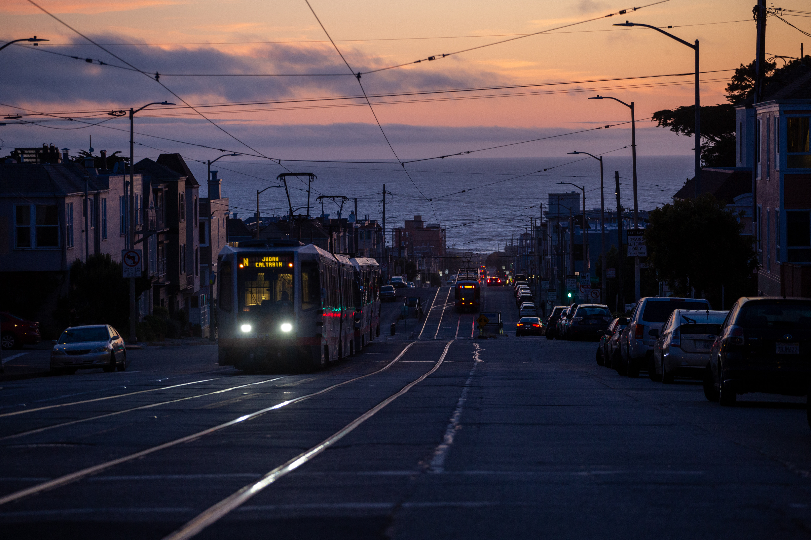

Hi!
My name is Ansel. I'm a photographer from Oakland, CA currently going to school in Burlington, VT.
This is a temporary placeholder site until I get around to building a proper fleshed out website.
In the meantime, you can check out some of my work on my Instagram, @aleedsphotography.
Bellow are a couple more of my personal favorite photos I've taken.
Thanks for stopping by!


 



©2025 Ansel Leeds
Nothing on this website was created with the use of AI, including the website itself. I do not give consent for AI to train off of this website's content.